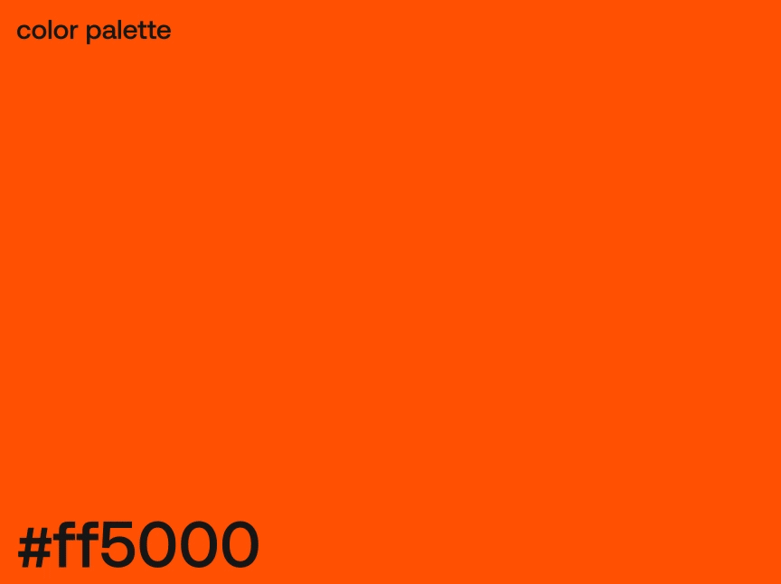

JOSIP
AMADEUS
ČERIĆ
Pozdrav, moje ime je Josip i ovo je moje rješenje za RICO'S zadatak
Za početak ćete uočiti da je ovo web stranica koju sam samostalno isprogramirao - osim dizajnom bavim se i programiranjem. Koristim programske jezike HTML i CSS te JavaScript.
U nastavku možete vidjeti moje rješenje, a za koje sam koristio više alata, odnosno programa. Kako koristim Blender nisam koristio tuđe mockup-ove već sam izrađivao vlastite. Jedino sam za fotke na dnu stranice koristio tuđe fotografije preko kojih sam stavljao RICO'S logo i grafike - za to sam bio koristio Adobe Photoshop.
Animacije koje ćete vidjeti radio sam u After Effectsu, a grafike sam radio putem programiranja u JavaScriptu. Tako da se može reći da sam u principu sve svoje vještine koristio prilikom izrade ovog zadatka.

Za gore prikazane grafike koristio sam JavaScript. Programski kod sam isprogramirao na način da sam odredio paletu boju, oblike, dopuštene veličine oblika te dopuštenu količinu oblika. Zatim sam odredio da se na temelju slučajnosti izgeneriraju grafike. Program svaki put najprije promiješa paletu boja, pa nasumično odredi hoće li pozadina biti podijeljena horizontalno, vertikalno ili pak dijagonalno. Kada se pozadina podijeli na dva dijela biraju se dvije boje - svaka za svoju cijelinu.
Zatim se crtaju zvjezdice u nasumično odabranoj veličini te se iz palete nasumično odabire boja a koja već do tada nije bila korištena. Na kraju se još samo crta u nešto većoj veličini ili jedan krug ili kvadrat ili nova velika zvjezdica. Na takav se način mogu u kratkom roku izgenerirati velike količine grafika (programski kod je takav da se trenutno grafike generiraju brzinom od po tri grafike po sekundi).
Hvala na vremenu i pažnji.